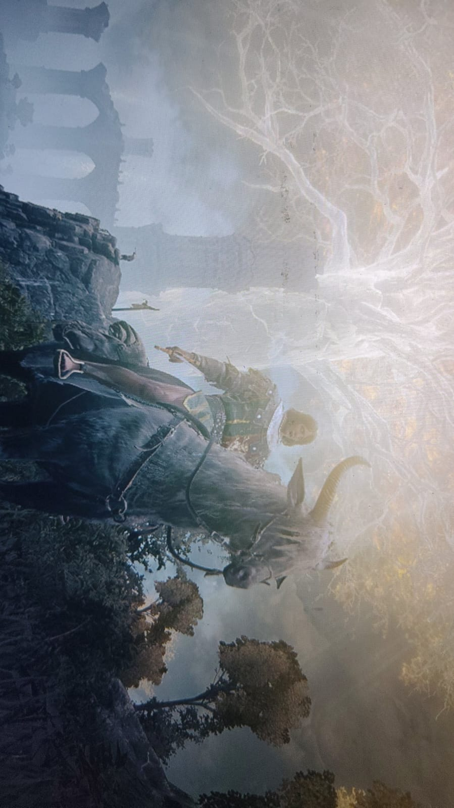
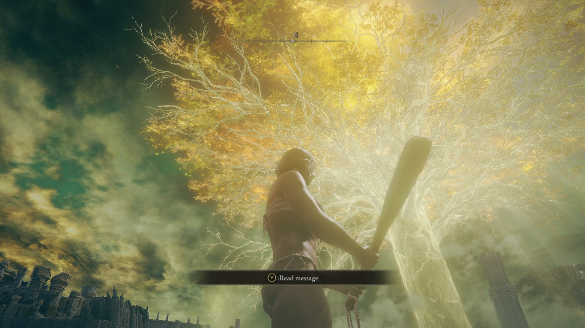

Welcome to My Blog
Welcome to my personal blog! This is a place where I share my thoughts about games and other things I find interesting. Today's post is about Elden Ring, one of the biggest games of the last few years.
Elden Ring
Elden Ring is an action role-playing game that mixes a huge open world with the tough combat that FromSoftware is known for. In this post I'll cover some background on the game, how it plays, its story, and then what I personally thought of it.
About the Game
Development
Elden Ring was developed by FromSoftware and published by Bandai Namco Entertainment. It was directed by Hidetaka Miyazaki, who also led Dark Souls, and the world's mythology was written with author George R. R. Martin. It was released on 25 February 2022 for PlayStation 4, PlayStation 5, Xbox One, Xbox Series X/S and Windows.
Gameplay
It is played from a third-person view, and you explore a large open world on foot or on a spirit horse called Torrent. You fight with weapons, magic and special skills called Ashes of War, and you can summon spirits to help you in tough fights. Resting at checkpoints called Sites of Grace heals you but also brings back most enemies. The game also has online features, where you can call other players to help you or get invaded by them.

The Story
The game is set in the Lands Between, which was ruled by Queen Marika, the Eternal. After the Elden Ring is shattered, her descendants, the demigods, each take a piece of it called a Great Rune and start fighting for power. You play as a Tarnished, one of the exiles who are called back to the land, and your goal is to gather the Great Runes and become the Elden Lord. There are multiple endings depending on the choices you make and the characters you help.
Shadow of the Erdtree
A big expansion called Shadow of the Erdtree was released on 21 June 2024. It added a new area to explore, new bosses, and a new way to become stronger inside that area.
What I Liked
The Freedom
This is my favorite part. If a boss is too hard, you can just leave and go somewhere else, so you never feel stuck. I spent hours just riding around and finding random caves and secrets, and it never felt like a waste of time.
The World and Atmosphere
The world looks beautiful and a bit sad at the same time. The golden light of the Erdtree, the broken castles and the empty fields make it feel like something big happened there long ago, and a lot of the story is told just by looking around.

The Bosses
Boss fights are the main reason I kept playing. Margit, the Fell Omen, stopped me for a long time early on, and General Radahn felt great to beat. When you win, you really feel like you earned it.
Honorable Mention: Malenia
Malenia, Blade of Miquella, is an optional boss and she deserves her own mention. She's very fast, she heals herself whenever she hits you, and her Waterfowl Dance can take most of your health at once. I got stuck on her for ages, but beating her was one of my favorite moments in the game.
My Rating
9 out of 10
I'd give it a 9/10. The freedom, the world and the boss fights are so good that I forgive most of the small stuff.
About Me
Hello Everyone! I am Arnav Singh, the person behind this blog. I like playing games and sharing what I think about them with others.
This website was created using HTML.
Contact
Name : ARNAV SINGH
Enrollment No. : LCI2026025